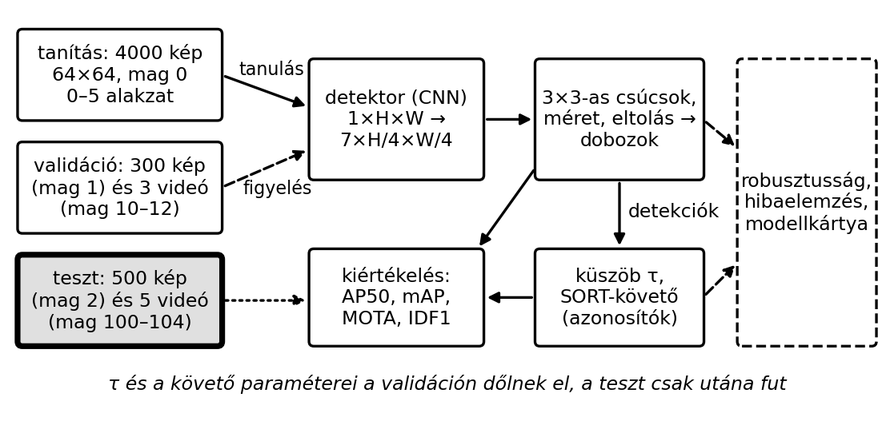
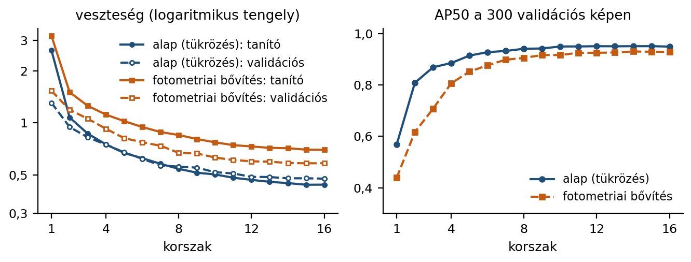
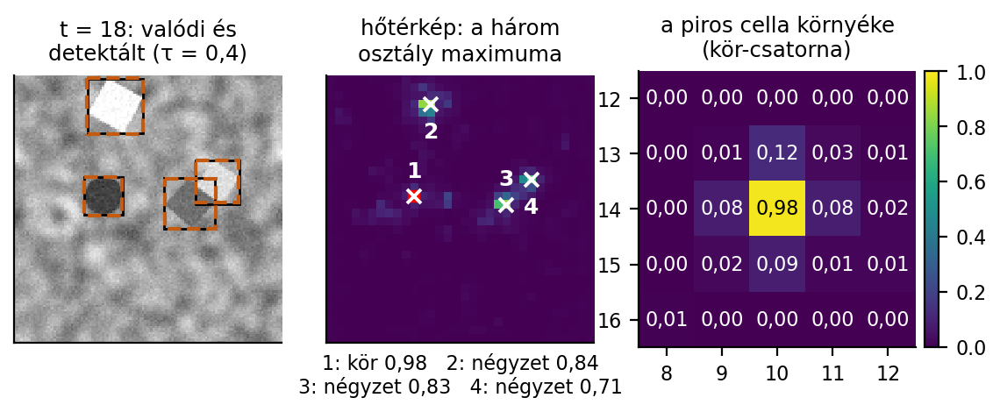
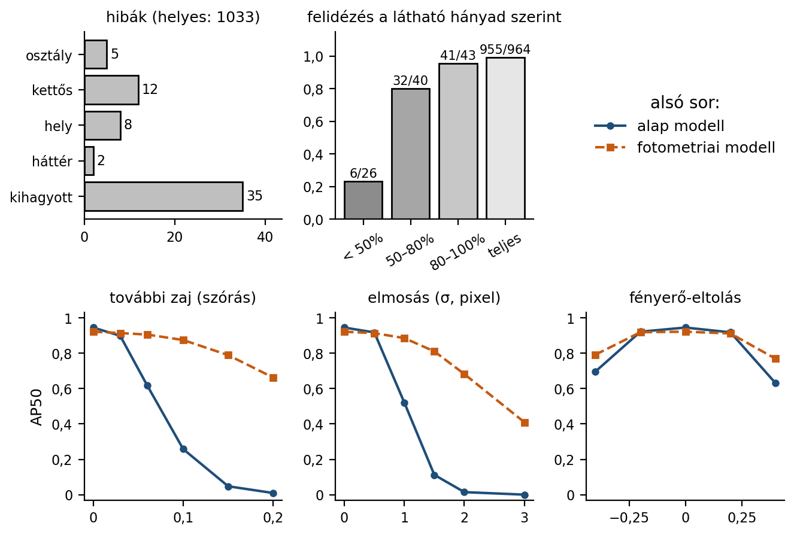

Eddig minden részt külön mértünk: a hálót osztályozáson, a detektort álló képeken, a követőt szimulált, zajos detekciókkal. Egy valódi rendszerben ezek egymásra épülnek, és a hibáik is: egy kihagyott detekció a követőben megszakadás lesz, egy bizonytalan hamis doboz pedig rövid életű, hamis azonosító. Ebben a projektben a mozgó alakzatok videóján építünk teljes detektáló–követő rendszert: saját NumPy-detektort tanítunk, összekötjük a SORT-típusú követővel, előre rögzített feltételek szerint kiértékeljük, megnézzük, hol hibázik, hogyan bírja az eltolt adatot, és modellkártyát írunk róla.
A kész kód a visionkit.projects.detect_track modulban
van. Minden mérföldkő előtt próbáld meg magad megírni a lépést; a
jegyzőkönyv a Záróprojekt I: kalibrált kamera és
síkbeli kiterjesztett valóság hétpontos sablonját követi.

A háló minden képkockára egy kisebb hőtérképet ad, amelynek csúcsai az objektumközéppontok; a küszöbnél erősebb dobozokat a követő képkockáról képkockára összekapcsolja. A lenti interaktív ábra a kész rendszer eredménye egy olyan videón, amelyet sem a tanítás, sem a paraméterválasztás nem látott:
A fekete vékony doboz az alapigazság, a narancs szaggatott a detekció, a kék a követő. Az idősáv (a nyomtatott ábrán fent a kiinduló, lent a választott beállításé) soronként egy valódi objektum: a felirat a hozzá párosított követőazonosító, a csíkozott cellában nincs hozzá követő, a függőleges vonás az azonosító megjelenése vagy váltása.
Bemenet: -as szürkeárnyalatos videó (60 képkocka), mozgó, forgó, egymást részben takaró körök, négyzetek és háromszögek zajos, textúrázott háttéren; az objektumok közben megjelenhetnek és eltűnhetnek. Kimenet: képkockánként dobozok , osztály, pontszám és időben állandó azonosító.
Az elfogadási feltételeket a tesztelés előtt rögzítjük, különben a mérce a mért eredményhez igazodna:
| # | Mérőszám | Halmaz | Feltétel |
|---|---|---|---|
| F1 | detektálási AP50 | 500 álló tesztkép | |
| F2 | MOTA (IoU 0,5) | 5 tesztvideó együtt | |
| F3 | IDF1 (IoU 0,5) | 5 tesztvideó együtt | |
| F4 | AP50 további 0,1 zajszórás mellett | 500 álló tesztkép |
Futásidő-feltételt nem szabunk: terhelt, megosztott gépen mért idő nem összehasonlítható.
A tanításhoz a shapes_multi_dataset 4000 darab
-es
képét használjuk 0–5 objektummal (mag 0), a tanítás figyelésére további
300 képet (mag 1). A videókat ugyanaz a raszterizáló készíti
(shapes_video), azonos, 7–11 pixeles méretekkel. A
validációs videók (mag 10–12) döntik el a küszöböt és a
követő beállításait, a tesztvideók (mag 100–104) és a
2-es magú 500 álló tesztkép csak a végső mérésre szolgálnak; a 3-as magú
további 500 kép és a 200–204-es videók egy utólagos megerősítő
mérés tartalékai. A felosztás videószinten történik: egy videó
szomszédos képkockái majdnem azonosak, ha két halmazba kerülnének,
adatszivárgás lenne (Adatkészletek, annotáció és
eloszláseltolódás).
Egy részlet, amelyre a hibaelemzés visszatér: a tanító generátor
alapbeállítása (min_visible=0.4) minden alakzatból legalább
40%-ot láthatóan hagy, a videókban viszont egy objektum ennél erősebben
is takarásba kerülhet. A kisebb képen tanítás és a nagyobb képen
futtatás azért működik, mert a háló teljesen
konvolúciós: nincs benne a képmérethez kötött réteg, és az
objektumok mérete pixelben ugyanaz.
A detektor az Egylépcsős, anchor-mentes és transzformeres detektorok középpont-hőtérképes (CenterNet-típusú) elvét követi. A bemenet , a kimenet : három hőtérkép-logit (osztályonként egy), két méret (szélesség, magasság cellaegységben) és két cellán belüli eltolás. A hálót két -es max-pooling csökkenti negyedére, utána egy dilatált réteg növeli a receptív mezőt 42 pixelre: ez bőven lefedi a legfeljebb kb. 31 pixeles dobozokat (Konvolúciós háló NumPy-ban: rétegek és visszaterjesztés).
A hőtérkép célértéke minden objektumnál a középpontot tartalmazó cellában 1, körülötte Gauss-folt; a veszteség az Egylépcsős, anchor-mentes és transzformeres detektorok „büntetés- csökkentett” focal loss-a, a méretre és az eltolásra pedig L1 csak a pozitív cellákban:
azaz a hőtérkép a „hol és mi”, a méret a „mekkora”, az eltolás pedig a 4 pixeles rács kvantálási hibáját javítja. Dekódoláskor nincs szükség NMS-re: a 3×3-as környezetükben maximális cellák a detekciók (a Kulcspont- és pózbecslés hőtérképekkel parabolaillesztése az eltolás-fej alternatívája lenne).
Két apró, de fontos döntés: a hőtérkép-csatornák kezdeti torzítása (kezdetben minden cella kb. 1% valószínűségű, így a sok üres cella nem uralja az első lépéseket), a bővítés pedig csak tükrözés és transzponálás, amelyeknél a célértékek pontosan transzformálhatók. Az AdamW-optimalizáló koszinuszos ütemezéssel, 16 korszakon, 32-es batch-ekkel tanul. A modult egy második, fotometriai bővítésű változat is tanítja (véletlen fényerő, kontraszt, zaj), amelyet a robusztussági vizsgálatban vetünk össze az alapmodellel.

Az alapmodell végső validációs AP50-e , a fotometriai változaté . Az utóbbi tanító vesztesége nagyobb a validációsnál, mert a bővített képek nehezebbek. A mentett futás modellenként kb. 44 perc volt egy erősen terhelt gépen, a két tanítás egyszerre futott.
A követő az Objektumkövetés detekciókból
SORT-típusú lánca (track.sort_tracker): minden pályán
Kálmán-predikció, magyar módszeres IoU-társítás (küszöb 0,3), frissítés,
új pálya a pár nélküli detekciókból. Egy jelölt pálya
min_hits találat után lesz megerősített, és
max_age kihagyott képkockát él túl. A detektor és a követő
közé a
pontszámküszöb kerül.
A detektálást a Metrikák: PR-görbe, AP/mAP, mIoU és kalibráltság szerinti AP-vel mérjük; az AP a rangsorból számolódik, ezért nem függ a -tól. A követést két számmal:
A MOTA a képkockánkénti hibákat számolja (kihagyás, hamis doboz, azonosítóváltás az összes valódi dobozhoz viszonyítva), az IDF1 azt, hogy egy objektum a teljes sorozatban ugyanazt az azonosítót tartja-e: IDTP a valódi és követett pályák legjobb egy–egy értelmű párosításában egyező dobozok száma. Több videóra a darabszámokat összegezzük, és abból számolunk arányt – nem az arányokat átlagoljuk.
1. Egy csúcs dekódolása. A tesztvideó egy képkockáján a legnagyobb pontszámú detekció:

A képkocka hőtérképén a legnagyobb pontszám (0,98, kör) a cellában van, a fej kimenete itt: eltolás , méret cella. Ebből
a doboz tehát , és a valódi dobozzal az IoU . A cellaközéppont szabálya a 4-es lépésközű térkép pixelközép-konvenciója; az eltolás ehhez képest értendő.
import numpy as np
from visionkit import detect
cu, cv = (10 + 0.143 + 0.5) * 4 - 0.5, (14 - 0.021 + 0.5) * 4 - 0.5
w, h = 4.568 * 4, 4.644 * 4
box = np.array([cu - w / 2, cv - h / 2, cu + w / 2, cv + h / 2])
truth = [33.19, 48.20, 51.40, 66.40] # a valódi doboz ebben a képkockában
print("doboz:", box.round(2), f" IoU a valódival: {detect.iou(box, truth)[0, 0]:.3f}")doboz: [32.94 48.13 51.21 66.7 ] IoU a valódival: 0.9562. MOTA és IDF1 darabszámokból. A végső teszten valódi doboz, , , , :
Hogy a két mérőszám mást mér, jól látszik a 101-es videón a kiinduló követővel (207 valódi doboz, , , 3 azonosítóváltás): MOTA , a három váltás alig számít; az IDF1 viszont , mert a váltás utáni dobozok „idegen” azonosítót hordoznak. Hosszabb pályatartással és osztálykapuval a váltások eltűnnek: MOTA , IDF1 .
import numpy as np
from visionkit import nn, shapes_multi, evaluate
from visionkit.projects import detect_track as P
test = shapes_multi.shapes_multi_dataset(500, 64, seed=P.STATIC_TEST_SEED)
val_videos = P.make_videos(P.VAL_SEEDS)
test_videos = P.make_videos(P.TEST_SEEDS)
counts = np.bincount([len(t["labels"]) for t in test["targets"]])
print("tesztképek objektumszám szerint (0–5):", counts)
for name, videos in (("validáció", val_videos), ("teszt", test_videos)):
vis = np.concatenate([g["visibility"] for v in videos for g in v["gt"]])
print(f"{name}: {len(videos)} videó, {len(vis)} valódi doboz, "
f"{np.mean(vis < 0.8):.1%} 80%-nál kevésbé látszik")tesztképek objektumszám szerint (0–5): [88 81 96 84 77 74]
validáció: 3 videó, 630 valódi doboz, 9.7% 80%-nál kevésbé látszik
teszt: 5 videó, 1073 valódi doboz, 6.2% 80%-nál kevésbé látszikA videókban a dobozok egy része takart; ezeken várjuk a legtöbb hibát.
A tanítás néhány tíz percig tart CPU-n, ezért a fejezet
betölti a súlyokat, ha a
figures/data/cv070_detector.npz fájl megvan, és a mentett
beállítás egyezik a P.CONFIG szótárral. Ha a fájl hiányzik
vagy a beállítás eltér, a load_or_train ténylegesen
tanít, majd elmenti az eredményt; ilyenkor a „forrás” sor
trained lesz, és a futás hosszú. Kézzel is elindíthatod:
cd code && OMP_NUM_THREADS=2 python3 -m visionkit.projects.detect_track flip
(illetve photo).
model, info = P.load_or_train(P.WEIGHTS, P.CONFIG, verbose=True)
robust_model, robust_info = P.load_or_train(P.WEIGHTS_ROBUST, P.CONFIG_ROBUST, verbose=True)
log = info["log"]
print(f"forrás: {info['source']} (alap), {robust_info['source']} (fotometriai)")
print(f"paraméterek: {sum(p.size for p in model.parameters())}, receptív mező: "
f"{nn.receptive_field(P.LAYER_SPEC)[-1]['size']} px")
print(f"utolsó korszak: tanító veszteség {log['train_loss'][-1]:.3f}, "
f"validációs {log['val_loss'][-1]:.3f}, val. AP50 {log['val_ap50'][-1]:.3f}")
print(f"a mentett tanítás ideje: {log['seconds'] / 60:.0f} perc (terhelt gépen)")forrás: cache (alap), cache (fotometriai)
paraméterek: 55243, receptív mező: 42 px
utolsó korszak: tanító veszteség 0.441, validációs 0.477, val. AP50 0.949
a mentett tanítás ideje: 44 perc (terhelt gépen)Újratanításkor más gépen vagy BLAS-szálszámmal a második–harmadik tizedes eltérhet.
val_det = [P.detect_images(model, v["frames"]) for v in val_videos]
val_gt = [g for v in val_videos for g in v["gt"]]
print(f"validációs AP50 (videó): {P.video_ap(val_videos, val_det)['map']:.3f}")
print(" tau det. P det. R F1 MOTA IDF1 IDSW")
for tau in (0.2, 0.3, 0.4, 0.5, 0.6, 0.7):
c = P.count_errors([d for v in val_det for d in v], val_gt, tau)
m = P.evaluate_tracking(val_videos, val_det, tau)
print(f" {tau:.1f} {c['precision']:.3f} {c['recall']:.3f} {c['f1']:.3f} "
f"{m['mota']:.3f} {m['idf1']:.3f} {m['idsw']:4d}")validációs AP50 (videó): 0.963
tau det. P det. R F1 MOTA IDF1 IDSW
0.2 0.689 0.949 0.798 0.741 0.731 19
0.3 0.885 0.938 0.911 0.857 0.770 9
0.4 0.959 0.924 0.941 0.881 0.762 7
0.5 0.988 0.902 0.943 0.868 0.763 5
0.6 0.996 0.859 0.922 0.813 0.754 6
0.7 1.000 0.759 0.863 0.683 0.703 7A követésben a legnagyobb MOTA -nél van; az F1 a -nél, az IDF1 a -nél a legnagyobb, de a különbségek kicsik. -nél a sok hamis doboz 19 azonosítóváltást okoz. Ezután a követő beállításait vizsgáljuk egyenként, majd rácsban:
variants = [("alapbeállítás", {}), ("max_age = 1", dict(max_age=1)),
("max_age = 12", dict(max_age=12)), ("min_hits = 1", dict(min_hits=1)),
("mohó társítás", dict(method="greedy")),
("osztálykapu", dict(use_labels=True))]
for name, change in variants:
params = dict(P.BASE_PARAMS, **change)
m = P.evaluate_tracking(val_videos, val_det, **params)
print(f"{name:14s} MOTA {m['mota']:.3f} IDF1 {m['idf1']:.3f} FP {m['fp']:3d} "
f"FN {m['fn']:3d} IDSW {m['idsw']}")
ranked = P.search_params(val_videos, val_det) # 3 × 4 × 2 = 24 beállítás
print("rácskeresés (MOTA + IDF1 szerint), a három legjobb:")
for _, q, m in ranked[:3]:
print(f" tau {q['score_threshold']} max_age {q['max_age']:2d} "
f"osztálykapu {'be' if q['use_labels'] else 'ki'}: MOTA {m['mota']:.3f} "
f"IDF1 {m['idf1']:.3f}")
assert ranked[0][1] == P.TRACK_PARAMS
tau = P.TRACK_PARAMS["score_threshold"]alapbeállítás MOTA 0.881 IDF1 0.762 FP 6 FN 62 IDSW 7
max_age = 1 MOTA 0.881 IDF1 0.762 FP 6 FN 62 IDSW 7
max_age = 12 MOTA 0.884 IDF1 0.882 FP 8 FN 57 IDSW 8
min_hits = 1 MOTA 0.881 IDF1 0.808 FP 21 FN 44 IDSW 10
mohó társítás MOTA 0.881 IDF1 0.762 FP 6 FN 62 IDSW 7
osztálykapu MOTA 0.883 IDF1 0.809 FP 2 FN 68 IDSW 4
rácskeresés (MOTA + IDF1 szerint), a három legjobb:
tau 0.4 max_age 12 osztálykapu be: MOTA 0.895 IDF1 0.888
tau 0.4 max_age 12 osztálykapu ki: MOTA 0.884 IDF1 0.882
tau 0.5 max_age 12 osztálykapu be: MOTA 0.876 IDF1 0.887Olvasat: a max_age = 1 és a 3 ugyanazt adja
(nincs pontosan 2–3 képkockás rés), a 12 viszont
-ről
-re
emeli az IDF1-et, mert átíveli a hosszabb takarásokat. A
min_hits = 1 kevesebb kihagyást, de több hamis dobozt ad.
Itt a mohó és a magyar társítás nem különbözik, mert kevés az objektum.
Az osztálykapu (eltérő osztályú pár tiltása) csökkenti a hamis dobozokat
és a váltásokat, de néhány jogos társítást is elveszít. A 24 beállításos
rácsban a
,
max_age = 12, osztálykapu a legjobb; ez kerül a
P.TRACK_PARAMS szótárba. Három videón a harmadik tizedesnyi
különbség zaj: a rács bővítése főleg a validációs halmazra
illesztene.
Mielőtt a tesztre mennénk, a kiindulóponttal is összevetjük magunkat: az Egylépcsős, anchor-mentes és transzformeres detektorok kisebb középpont-detektorával.
small, _ = detect.load_or_train_detector("center", "figures/data/cv054_center.npz")
val_images = shapes_multi.shapes_multi_dataset(300, 64, seed=P.CONFIG["val_seed"])
for name, net, found in (
("kis modell (19.3)", small, detect.center_detect(small, val_images["images"])),
("projektmodell", model, P.detect_images(model, val_images["images"]))):
ap = evaluate.detection_ap(found, val_images["targets"], 3)["map"]
print(f"{name:17s} {sum(p.size for p in net.parameters())} paraméter, AP50 {ap:.3f}")
small_det = [detect.center_detect(small, v["frames"]) for v in val_videos]
m = P.evaluate_tracking(val_videos, small_det, **P.TRACK_PARAMS)
print(f"kis modell, validációs videók: AP50 {P.video_ap(val_videos, small_det)['map']:.3f}, "
f"MOTA {m['mota']:.3f}, IDF1 {m['idf1']:.3f}")kis modell (19.3) 42199 paraméter, AP50 0.955
projektmodell 55243 paraméter, AP50 0.949
kis modell, validációs videók: AP50 0.962, MOTA 0.871, IDF1 0.881Őszinte tanulság: a kisebb, rövidebben tanított modell a validáción gyakorlatilag egyenértékű (a követés MOTA-ja két-három ponttal alacsonyabb, de ezt a küszöböt nem neki választottuk). Egy valódi projektben itt több tanítási maggal döntenénk, és egyenlő minőségnél a kisebbet választanánk. A projektmodellel azért folytatjuk, mert a fotometriai változata azonos recepttel készült, nem azért, mert bizonyítottan jobb.
A paraméterek mostantól rögzítettek: a végső mérés az eddig érintetlen teszthalmazon fut, és az eredmény alapján semmit sem hangolunk.
static = P.detect_images(model, test["images"])
coco = evaluate.coco_map(static, test["targets"], 3)
per_class = evaluate.detection_ap(static, test["targets"], 3)["ap"]
print(f"álló teszt: AP50 {coco['map50']:.3f}, AP75 {coco['map75']:.3f}, "
f"AP@[.5:.95] {coco['map']:.3f}")
for name, value in zip(("kör", "négyzet", "háromszög"), per_class):
print(f" AP50, {name}: {value:.3f}")
matches = evaluate.detection_matches(static, test["targets"], 3, 0.5) # képenként
ci = evaluate.bootstrap_ci(lambda m: evaluate.ap_from_matches(m)["map"], matches,
n_boot=500, seed=0)
print(f"álló teszt AP50, 95%-os bootstrap-intervallum: [{ci['low']:.3f}; {ci['high']:.3f}]")
test_det = [P.detect_images(model, v["frames"]) for v in test_videos]
print(f"tesztvideók: képkockánkénti AP50 {P.video_ap(test_videos, test_det)['map']:.3f}")
total = P.evaluate_tracking(test_videos, test_det, **P.TRACK_PARAMS)
print(f"követés: MOTA {total['mota']:.3f}, IDF1 {total['idf1']:.3f}; GT {total['n_gt']}, "
f"FP {total['fp']}, FN {total['fn']}, IDSW {total['idsw']}, "
f"IDTP {total['idtp']}, IDFP {total['idfp']}, IDFN {total['idfn']}")
for seed, v, d in zip(P.TEST_SEEDS, test_videos, test_det):
m = P.evaluate_tracking([v], [d], **P.TRACK_PARAMS)
print(f" videó {seed}: MOTA {m['mota']:.3f} IDF1 {m['idf1']:.3f} IDSW {m['idsw']}")
noisy = P.shift_ap(model, test["images"], test["targets"], noise=0.1)
checks = [("F1 AP50", coco["map50"], 0.85), ("F2 MOTA", total["mota"], 0.75),
("F3 IDF1", total["idf1"], 0.75), ("F4 AP50, zaj 0.1", noisy, 0.60)]
for name, value, limit in checks:
verdict = "TELJESÜL" if value >= limit else "NEM TELJESÜL"
print(f"{name:17s} {value:.3f} >= {limit:.2f}: {verdict}")álló teszt: AP50 0.941, AP75 0.816, AP@[.5:.95] 0.704
AP50, kör: 0.975
AP50, négyzet: 0.945
AP50, háromszög: 0.915
álló teszt AP50, 95%-os bootstrap-intervallum: [0.934; 0.957]
tesztvideók: képkockánkénti AP50 0.982
követés: MOTA 0.949, IDF1 0.974; GT 1073, FP 0, FN 55, IDSW 0, IDTP 1018, IDFP 0, IDFN 55
videó 100: MOTA 0.970 IDF1 0.985 IDSW 0
videó 101: MOTA 0.928 IDF1 0.962 IDSW 0
videó 102: MOTA 0.961 IDF1 0.980 IDSW 0
videó 103: MOTA 0.903 IDF1 0.949 IDSW 0
videó 104: MOTA 0.978 IDF1 0.989 IDSW 0
F1 AP50 0.941 >= 0.85: TELJESÜL
F2 MOTA 0.949 >= 0.75: TELJESÜL
F3 IDF1 0.974 >= 0.75: TELJESÜL
F4 AP50, zaj 0.1 0.258 >= 0.60: NEM TELJESÜLAz F1–F3 teljesül, az F4 nem: 0,1 további zaj mellett az alapmodell AP50-e . A tiszta teszten a háromszög a legnehezebb osztály. A követés kimenetében nincs hamis doboz és azonosítóváltás; minden hiba kihagyás. A videónkénti MOTA és között szór, és a teszt könnyebbnek bizonyult a validációnál (ott MOTA , több takart dobozzal): öt videóból a rendszer minősége csak néhány százalékpont pontossággal ismert. A bootstrap-intervallumot a Metrikák: PR-görbe, AP/mAP, mIoU és kalibráltság szerint a képekre számoltuk.

frames_gt = [g for v in test_videos for g in v["gt"]]
frames_det = [d for v in test_det for d in v]
errors = P.error_types(frames_det, frames_gt, tau)
print(", ".join(f"{name}: {n}" for name, n in errors.items()))
r = P.recall_by_visibility(frames_det, frames_gt, tau)
for lo, hi, f, n in zip(r["edges"][:-1], r["edges"][1:], r["found"], r["total"]):
print(f"láthatóság {lo:.3f}–{min(hi, 1):.3f}: {f:4d} / {n:4d} = {f / n:.3f}")
for iou_nms in (None, 0.5):
d = [P.detect_images(model, v["frames"], nms_iou=iou_nms) for v in val_videos]
c = P.count_errors([x for v in d for x in v], val_gt, tau)
print(f"validáció, NMS = {iou_nms}: TP {c['tp']}, FP {c['fp']}, FN {c['fn']}")correct: 1033, wrong_class: 5, duplicate: 12, location: 8, background: 2, missed: 35
láthatóság 0.000–0.500: 6 / 26 = 0.231
láthatóság 0.500–0.800: 32 / 40 = 0.800
láthatóság 0.800–0.999: 41 / 43 = 0.953
láthatóság 0.999–1.000: 955 / 964 = 0.991
validáció, NMS = None: TP 582, FP 25, FN 48
validáció, NMS = 0.5: TP 576, FP 18, FN 54A leggyakoribb hiba a kihagyás (35), utána a kettős
(12) és a rossz helyű (8) doboz. A követő kiszűri a hamis dobozokat (a
tesztvideókon 0 FP maradt), de ennek ára van: a kimeneten 55 a kihagyás,
több, mint a detektornál – többek között azért, mert egy új pálya csak
min_hits = 3 találat után jelenik meg. A kihagyások oka
többnyire a takarás: a felénél kisebb részben látszó dobozokból csak
-ot
talál meg, a teljesen látszókból
-et.
Az osztályos párosításban a 39 kihagyás közül 20 ilyen, pedig ez a
dobozok 2,4%-a – pontosan az a tartomány, amelyet a tanítóadat
(min_visible=0.4) alig tartalmazott. Az osztályfüggetlen
NMS (validáción) 7 hamis dobozt töröl, de 6 jót is: egymást takaró
objektumok dobozait is eldobja, ezért nem használjuk.
shifts = [("eredeti", {}), ("zaj 0.1", dict(noise=0.1)), ("elmosás 1.5", dict(blur=1.5)),
("világosabb +0.3", dict(brightness=0.3)),
("sötétebb -0.3", dict(brightness=-0.3)), ("kontraszt 0.5", dict(contrast=0.5))]
print(f"{'eltolás':17s} alap fotometriai (AP50, 500 álló tesztkép)")
for name, shift in shifts:
a = P.shift_ap(model, test["images"], test["targets"], **shift)
b = P.shift_ap(robust_model, test["images"], test["targets"], **shift)
print(f"{name:17s} {a:.3f} {b:.3f}")
rob_det = [P.detect_images(robust_model, v["frames"]) for v in test_videos]
m = P.evaluate_tracking(test_videos, rob_det, **P.TRACK_PARAMS)
print(f"fotometriai modell a tesztvideókon: MOTA {m['mota']:.3f}, IDF1 {m['idf1']:.3f}")eltolás alap fotometriai (AP50, 500 álló tesztkép)
eredeti 0.945 0.922
zaj 0.1 0.258 0.874
elmosás 1.5 0.112 0.810
világosabb +0.3 0.814 0.872
sötétebb -0.3 0.844 0.883
kontraszt 0.5 0.582 0.880
fotometriai modell a tesztvideókon: MOTA 0.917, IDF1 0.957Az alapmodell összeomlik zaj és elmosás alatt: a tanítás csak 0,03 szórású zajt látott, elmosást egyáltalán nem. A fotometriai bővítésű modell a tiszta képen valamivel gyengébb ( a helyett), de zaj, elmosás és kontrasztcsökkenés alatt messze jobb. Érdekes, hogy az elmosásra is javult, pedig ilyen bővítést nem kapott; feltehetően a zaj arra kényszerítette a hálót, hogy ne éles élekre támaszkodjon (feltevés, külön kísérlettel nem igazoltuk). Az erős eltolásoknál ez a modell is romlik: az ábrán 0,2 zajnál , elmosásnál az AP50.
Ha a robusztussági eredmény alapján a fotometriai modellt választjuk, a régi teszthalmaz már részt vett a döntésben. A tiszta eljárás: friss, sosem látott adaton újramérni, a paraméterek változtatása nélkül.
fresh = shapes_multi.shapes_multi_dataset(500, 64, seed=3)
fresh_videos = P.make_videos((200, 201, 202, 203, 204))
found = P.detect_images(robust_model, fresh["images"])
ap = evaluate.detection_ap(found, fresh["targets"], 3)["map"]
ap_noise = P.shift_ap(robust_model, fresh["images"], fresh["targets"], noise=0.1)
det = [P.detect_images(robust_model, v["frames"]) for v in fresh_videos]
m = P.evaluate_tracking(fresh_videos, det, **P.TRACK_PARAMS)
for name, value, limit in (("F1 AP50", ap, 0.85), ("F2 MOTA", m["mota"], 0.75),
("F3 IDF1", m["idf1"], 0.75), ("F4 AP50, zaj 0.1", ap_noise, 0.6)):
verdict = "TELJESÜL" if value >= limit else "NEM TELJESÜL"
print(f"{name:17s} {value:.3f} >= {limit:.2f}: {verdict}")
base_det = [P.detect_images(model, v["frames"]) for v in fresh_videos]
b = P.evaluate_tracking(fresh_videos, base_det, **P.TRACK_PARAMS)
print(f"alapmodell ugyanitt: MOTA {b['mota']:.3f}, IDF1 {b['idf1']:.3f}")
per_class = evaluate.detection_ap(found, fresh["targets"], 3)["ap"]
vis = P.recall_by_visibility([d for v in det for d in v],
[g for v in fresh_videos for g in v["gt"]], tau)
print("AP50 (kör, négyzet, háromszög):", per_class.round(3))
for lo, f, n in zip(vis["edges"], vis["found"], vis["total"]):
print(f"felidézés, láthatóság >= {lo:.3f}-től: {f}/{n}")F1 AP50 0.920 >= 0.85: TELJESÜL
F2 MOTA 0.910 >= 0.75: TELJESÜL
F3 IDF1 0.936 >= 0.75: TELJESÜL
F4 AP50, zaj 0.1 0.865 >= 0.60: TELJESÜL
alapmodell ugyanitt: MOTA 0.913, IDF1 0.938
AP50 (kör, négyzet, háromszög): [0.946 0.943 0.87 ]
felidézés, láthatóság >= 0.000-től: 9/49
felidézés, láthatóság >= 0.500-től: 32/41
felidézés, láthatóság >= 0.800-től: 61/61
felidézés, láthatóság >= 0.999-től: 856/877A fotometriai modell friss adaton mind a négy feltételt teljesíti, ezért ezt adjuk ki. Ugyanezeken az új videókon az alapmodell tiszta képen gyakorlatilag azonos, holott az eredeti teszten néhány ponttal jobbnak tűnt: öt sorozat nem elég a két modell megkülönböztetéséhez tiszta videón, a zajnál mért különbség viszont egyértelmű.
Opcionális vázlat, a könyv ellenőrzése nem futtatta; a célértékeket a
P.pack_targets adja (ellenőrizendő: a használt
PyTorch-verzió API-ja).
# részlet
import torch
import torch.nn as tnn
import torch.nn.functional as F
def block(a, b, d=1):
return tnn.Sequential(tnn.Conv2d(a, b, 3, padding=d, dilation=d, bias=False),
tnn.BatchNorm2d(b), tnn.ReLU())
net = tnn.Sequential(block(1, 12), tnn.MaxPool2d(2), block(12, 24), tnn.MaxPool2d(2),
block(24, 48), block(48, 48, d=2), block(48, 48),
tnn.Conv2d(48, 7, 1))
with torch.no_grad():
net[-1].bias[:3] = -4.6
def loss_fn(out, y): # y: (N, 8, h, w), lásd pack_targets
z, heat, mask = out[:, :3], y[:, :3], y[:, 7:8]
pos, p = (heat > 0.999).float(), torch.sigmoid(z)
l_pos = -((1 - p) ** 2 * F.logsigmoid(z) * pos)
l_neg = -((1 - heat) ** 4 * p ** 2 * F.logsigmoid(-z) * (1 - pos))
l_heat = (l_pos + l_neg).sum() / pos.sum().clamp(min=1)
n = mask.sum().clamp(min=1)
l_size = (mask * (out[:, 3:5] - y[:, 3:5]).abs()).sum() / n
l_off = (mask * (out[:, 5:7] - y[:, 5:7]).abs()).sum() / n
return l_heat + 0.1 * l_size + l_offAz Etika, adatvédelem és szabályozás sablonja szerint:
| Mező | Tartalom |
|---|---|
| Modell | középpont-hőtérképes detektor (NumPy, fotometriai bővítés),
SORT-típusú követő
(,
max_age 12, osztálykapu); súlyok:
cv070_detector_photo.npz |
| Rendeltetés | oktatás: a könyv szintetikus alakzatvideói |
| Nem erre való | valós képek, személyek, járművek követése; biztonsági vagy megfigyelési döntés |
| Tanítóadat | 4000 generált -es kép (mag 0), saját generátor; személyes adatot nem tartalmaz |
| Teljesítmény | friss adaton AP50 (500 kép); MOTA , IDF1 (5 videó) |
| Alcsoportok | AP50: kör , négyzet , háromszög ; felidézés 50% alatti láthatóságnál , teljesen látszónál |
| Robusztusság | AP50 a 2-es magú teszthalmazon: 0,1 zaj ; elmosás ; 0,5 kontraszt ; erős eltolásnál (0,2 zaj, ) , illetve |
| Ismert hibamódok | erős takarás, téves osztályú dobozok takarásnál; a tanítási tartományon kívüli méret (nem mértük) |
| Bizonytalanság | öt tesztvideó, egyetlen tanítási mag; a pontszám nem kalibrált valószínűség |
| Biztonság | ellenséges példákat és manipulációt nem vizsgáltunk |
| Felelős, verzió | a könyv kódja; beállítás és napló a súlyfájlban |
Etikai ellenőrzés: az adat szintetikus; a követő technika viszont kettős felhasználású – valós személyekre alkalmazva megfigyelőrendszer lenne. Ezért a kártya a tiltott felhasználást is leírja; valós adatra átvitel előtt új adatlap, jogalap-vizsgálat és csoportonkénti kiértékelés kell.
Jegyzőkönyv (hét pont): (1) cél és F1–F4 előre; (2)
adatok és magok; (3) P.CONFIG, P.TRACK_PARAMS;
(4) eredmények alapigazsághoz; (5) abláció és rácskeresés; (6)
hibaelemzés; (7) korlátok: takarás, szintetikus adat, egy tanítási mag.
Maszkkimenet nincs, ezért PQ-t (a Példány- és
panoptikus szegmentálás mérőszámát) nem mérünk.
Továbbvitt eredmény. A detektálási–követési jegyzőkönyv (adatfelosztás, előre rögzített feltételek, validáción választott paraméterek, tesztmérés, hibaelemzés, robusztusság, modellkártya) a Vegyes vizsgafeladatsor tervezési feladatainak mintája, és a saját projektjeidé is.
A fejezet eleji interaktív ábrán a pontszámküszöb, a
max_age és a rétegek kapcsolhatók; a számok a
Python-számításból jönnek.
max_age-et
3-ra, az osztálykaput „ki”-re: MOTA
,
IDF1
,
három váltás. Lapozz a 18. és a 47–49. képkockához, és nézd meg, melyik
objektum kap új számot.max_age 12,
kapu nélkül ugyanez a három váltás marad; 3 és kapu mellett egy.
Mindkettőt bekapcsolva nulla. A magyarázat a 10. és a 45–47. képkockán
keresendő: takarás alatt a detektor gyenge, téves
osztályú dobozt is ad; kapu nélkül ez átállítja a takart
objektum pályáját, vagy saját pályát indít, amely átveszi az
objektumot.detect.image_to_feature és feature_to_image
következetes használata, egységteszt a célérték → dekódolás
körútra.max_age, magas
,
keresztezések). Javítás: a hibákat idősávon elemezd, ne
egyetlen számmal.aggregate_tracking.max_age?error_types kimenete alapján
melyik hibatípus javítása növelné legjobban a MOTA-t, és milyen
beavatkozást próbálnál ki először? Indokold a láthatóság szerinti
felidézéssel is.A projekt teljes láncot épített: szintetikus adat videószintű felosztással, 55 ezer paraméteres, teljesen konvolúciós középpont-hőtérképes detektor tükrözéses bővítéssel, SORT-típusú követő, előre rögzített elfogadási feltételek, validáción választott küszöb, egyszeri tesztmérés AP-vel, MOTA-val és IDF1-gyel, hibaelemzés láthatóság és hibatípus szerint, robusztussági vizsgálat, megerősítő mérés és modellkártya. Az alapmodell a tesztvideókon MOTA -et és IDF1 -et ért el, de 0,1 további zajnál az AP50 -ra esett; a fotometriai bővítésű modell friss adaton mind a négy feltételt teljesítette. A fő hibaforrás az erős takarás. A detektálási–követési jegyzőkönyv a saját projektek mintája.
1. MOTA ; IDF1 . Ellenőrzés: , és a kimeneti dobozok száma .
2. ; ; , ; a doboz .
3. A tesztvideókon a követő kimenete hamis doboz
nélkül maradt, tehát a MOTA-t gyakorlatilag csak a kihagyások rontják. A
legnagyobb tétel a kihagyás, azon belül az erősen takart objektumok
(felidézés
).
Elsőként a tanítóadatot módosítanám (min_visible=0.2, több
átfedő alakzat), mert a detektor ilyen eseteket alig látott; a követő
oldalán az interpoláció (5. feladat) pótolhat rövid réseket.
4. és 5. Mindkét utófeldolgozás a követő kimenetén dolgozik:
from collections import Counter
from visionkit import track
def drop_short(frames, L):
n = Counter(int(i) for f in frames for i in f["ids"])
out = []
for f in frames:
keep = np.array([n[int(i)] >= L for i in f["ids"]], dtype=bool)
out.append({"ids": f["ids"][keep], "boxes": f["boxes"][keep]})
return out
def interpolate(frames, gap_max):
out = [{"ids": list(f["ids"]), "boxes": list(f["boxes"])} for f in frames]
last = {} # azonosító -> (képkocka, doboz)
for t, f in enumerate(frames):
for i, b in zip(f["ids"], f["boxes"]):
if int(i) in last:
s, b0 = last[int(i)]
for k in range(1, t - s) if t - s - 1 <= gap_max else ():
a = k / (t - s)
out[s + k]["ids"].append(i)
out[s + k]["boxes"].append((1 - a) * b0 + a * b)
last[int(i)] = (t, b)
return [{"ids": np.array(o["ids"], dtype=int),
"boxes": np.array(o["boxes"]).reshape(-1, 4)} for o in out]
def score(videos, detections, post):
res = [track.tracking_metrics(v["gt"], post(P.run_tracker(d, **P.TRACK_PARAMS)))
for v, d in zip(videos, detections)]
return P.aggregate_tracking(res)
for name, post, values in (("rövid pályák törlése L", drop_short, (1, 3, 5, 10)),
("interpoláció G", interpolate, (0, 1, 3, 6, 12))):
for value in values:
m = score(val_videos, val_det, lambda f: post(f, value))
print(f"{name} = {value:2d}: MOTA {m['mota']:.3f} IDF1 {m['idf1']:.3f} "
f"FP {m['fp']:3d} FN {m['fn']:3d} IDSW {m['idsw']}")rövid pályák törlése L = 1: MOTA 0.895 IDF1 0.888 FP 2 FN 62 IDSW 2
rövid pályák törlése L = 3: MOTA 0.895 IDF1 0.888 FP 2 FN 62 IDSW 2
rövid pályák törlése L = 5: MOTA 0.895 IDF1 0.888 FP 2 FN 62 IDSW 2
rövid pályák törlése L = 10: MOTA 0.895 IDF1 0.888 FP 2 FN 62 IDSW 2
interpoláció G = 0: MOTA 0.895 IDF1 0.888 FP 2 FN 62 IDSW 2
interpoláció G = 1: MOTA 0.903 IDF1 0.893 FP 2 FN 57 IDSW 2
interpoláció G = 3: MOTA 0.908 IDF1 0.896 FP 2 FN 54 IDSW 2
interpoláció G = 6: MOTA 0.914 IDF1 0.899 FP 2 FN 50 IDSW 2
interpoláció G = 12: MOTA 0.932 IDF1 0.909 FP 2 FN 39 IDSW 2A rövid pályák törlése itt semmit sem változtat: a
min_hits = 3 és az osztálykapu már nem enged 10 képkockánál
rövidebb pályát a kimenetre. Az interpoláció a
növelésével monoton javít, a validáción
a legjobb (a kihagyás 62-ről 39-re csökken); a max_age = 12
fölötti
-nek
nem lenne hatása, mert annál hosszabb szünet után a követő törlődött, és
új azonosító születik.
best = 12
m = score(test_videos, test_det, lambda f: interpolate(f, best))
print(f"teszt, G = {best}: MOTA {m['mota']:.3f}, IDF1 {m['idf1']:.3f}, "
f"FP {m['fp']}, FN {m['fn']}, IDSW {m['idsw']}")teszt, G = 12: MOTA 0.981, IDF1 0.991, FP 0, FN 20, IDSW 0A teszten a kihagyás 55-ről 20-ra, a MOTA -ről -re javul. Valós időben ez nem használható: a rés kitöltéséhez a rés utáni képkockát kell ismerni, azaz legfeljebb 12 képkockát késleltetni a kimenetet. Offline videóelemzésben viszont teljesen jogos utófeldolgozás. Figyelem: ez a teszthalmaz második felhasználása; kiadási döntés előtt friss videókon is meg kellene erősíteni.
6. A leggyengébb pont az erős takarás, majd az erős
eltolás. Terv: (a) tanítás min_visible=0.2 beállítással és
Gauss-elmosásos bővítéssel, egyszerre csak egy változtatással; (b)
mindegyik változat legalább három tanítási maggal, mert egy futás
különbsége lehet véletlen; (c) választás a validáción, előre megnevezett
mérőszámmal (felidézés 50% alatti láthatóságnál és AP50 a rögzített
eltolásokon, miközben a tiszta AP50 nem csökkenhet 0,02-nál többet); (d)
a végső változat új magú tesztadaton, képekre és videókra számolt
bootstrap-intervallummal. Elfogadható, ha a javulás intervalluma nem
tartalmazza a nullát.